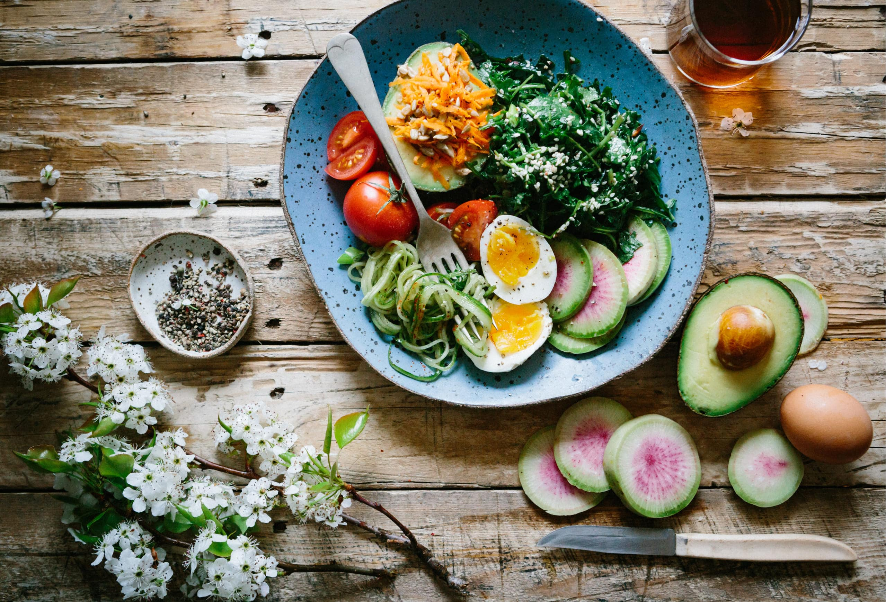

|  | ||
|
Bem-vindo à Cozinha Criativa! Aqui você encontrará uma variedade de receitas deliciosas, dicas culinárias e inspiração para explorar sua criatividade na cozinha. De sobremesas irresistíveis a pratos principais incríveis, temos algo para todos os gostos. Desfrute de momentos gastronômicos únicos e descubra o prazer de cozinhar com paixão. Aventure-se e experimente novas receitas para surpreender a si mesmo e aos outros. Bom apetite! |
||
Confira as principais receitas |
||

Brigadeiros Gourmet de Nozes |

Strogonoff de Carne |

Cappuccino Caseiro |

Mousse de Limão |

Bombom de Travessa |
File de Frango |
|
|